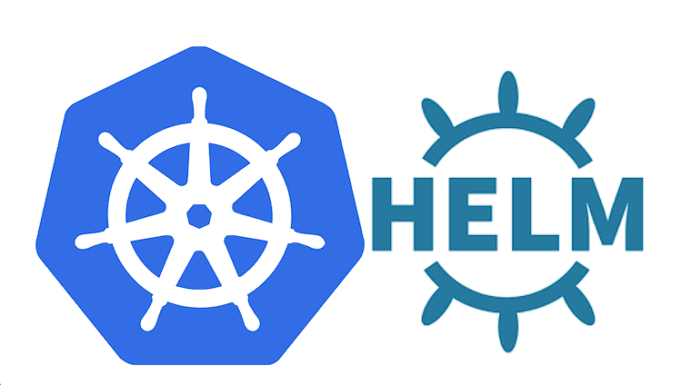

LEARNING HELM

Explore the docs »
Main Page
-
Code Page
-
Report Bug
-
Request Feature
Summary
TABLE OF CONTENT
About Project
This project aims to help students or professionals to learn the main concepts of helm
Getting Started
This is an example of how you may give instructions on setting up your project locally.
To get a local copy up and running follow these simple example steps.
Prerequisites
This is an example of how to list things you need to use the software
and how to install them.
- git
- kubernetes cluster up
Installation
Clone repository
git clone https://github.com/marcossilvestrini/learning-helm.git
Usage
Use this repository for get learning about helm exam
Roadmap
- Create repository
- Create a kubernetes cluster
- Install helm
- Add Examples of helm charts
Create Kubernetes Cluster
Minikube
# install
curl -Lo minikube https://storage.googleapis.com/minikube/releases/latest/minikube-linux-amd64
chmod +x ./minikube
sudo mv ./minikube /usr/local/bin/minikube
# get version
minikube version
# set hypervisor
minikube config set driver <YOUR_HYPERVISOR>
# up without hypervisor
minikube start --driver=hyperkit
# create cluster
minikube start --nodes 3 -p multinode-cluster
# get status of cluster
minikube status
# get ip address
minikube ip
# access minikube host
minikube ssh
# dashboard
minikube dashboard
# logs
minikube logs
# delete cluster
minikube delete
minikube delete --purge
Kind
# Install
curl -Lo ./kind https://kind.sigs.k8s.io/dl/v0.14.0/kind-linux-amd64
chmod +x ./kind
sudo mv ./kind /usr/local/bin/kind
# create cluster
kind create cluster
kind create cluster --name silvestrini
# get clusters
kind get clusters
# delete clusters
kind delete clusters $(kind get clusters)
## create yaml
cat << EOF > $HOME/kind-3nodes.yaml
kind: Cluster
apiVersion: kind.x-k8s.io/v1alpha4
nodes:
- role: control-plane
- role: worker
- role: worker
EOF
# create cluster
kind create cluster --name kind-multinodes --config $HOME/kind-3nodes.yaml
Kubectl
Install
# install
curl -LO https://storage.googleapis.com/helm-release/release/`curl -s \
https://storage.googleapis.com/helm-release/release/stable.txt`/bin/linux/amd64/kubectl
chmod +x ./kubectl
mv ./kubectl /usr/local/bin/kubectl
# get version
kubectl version --output=yaml --client
# kubectl autocomplete
source <(kubectl completion bash)
# kubectl alias
alias k=kubectl
complete -F __start_kubectl k
Install Helm
curl https://raw.githubusercontent.com/helm/helm/main/scripts/get-helm-3 | bash
helm version
Helm Repositories
# list available repositories
helm repo list
# add repositories
helm repo add bitnami https://charts.bitnami.com/bitnami
# update repositories
helm repo update
# remove repositories
helm repo remove bitnami
Helm Packages
# list available packages
helm list
helm list -n silvestrini
helm list -A
# install package
helm install silvestrini-phpmyadmin bitnami/phpmyadmin
helm upgrade --install silvestrini-phpmyadmin bitnami/phpmyadmin
# install package in specified namespace
helm install --namespace silvestrini silvestrini-phpmyadmin bitnami/phpmyadmin
# upgrade packages
helm upgrade silvestrini-phpmyadmin bitnami/phpmyadmin
# uninstall package
helm uninstall silvestrini-phpmyadmin
Helm Charts
Chart structure
wordpress/
Chart.yaml # A YAML file containing information about the chart
LICENSE # OPTIONAL: A plain text file containing the license for the chart
README.md # OPTIONAL: A human-readable README file
values.yaml # The default configuration values for this chart
values.schema.json # OPTIONAL: A JSON Schema for imposing a structure on the values.yaml file
charts/ # A directory containing any charts upon which this chart depends.
crds/ # Custom Resource Definitions
templates/ # A directory of templates that, when combined with values,
# will generate valid Kubernetes manifest files.
templates/NOTES.txt # OPTIONAL: A plain text file containing short usage notes
Helm Chart - Commands
# generate chart
helm create mychart
# get chart information
helm get manifest mychart
# Install chart
helm install mychart-v1 ./examples/mychart
# Simulate \ Debug install
helm install --debug --dry-run mychart-v3 ./examples/mychart
# get chart resources \ manifest
helm get manifest mychart-v1
# remove chart
helm uninstall mychart-v1
File
Contributing
Contributions are what make the open source community such an amazing place to
learn, inspire, and create. Any contributions you make are greatly appreciated.
If you have a suggestion that would make this better, please fork the repo and
create a pull request. You can also simply open an issue with the tag "enhancement".
Don't forget to give the project a star! Thanks again!
- Fork the Project
- Create your Feature Branch (
git checkout -b feature/AmazingFeature) - Commit your Changes (
git commit -m 'Add some AmazingFeature') - Push to the Branch (
git push origin feature/AmazingFeature) - Open a Pull Request
License
- This project is licensed under the MIT License * see the LICENSE.md file for details
Contact
Marcos Silvestrini - marcos.silvestrini@gmail.com

Project Link: https://github.com/marcossilvestrini/learning-helm